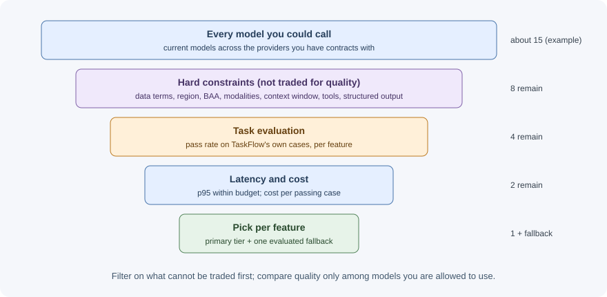

Choosing Models and Providers¶
TaskFlow has four AI features with very different needs: parsing a sentence into a task must be fast and cheap, project Q&A must cite the right documents, meeting summaries read long notes, and the task agent plans several tool calls where a mistake creates real tasks. No single model is the best choice for all four. This lesson shows how to choose: a decision matrix covering capability, latency, cost, context size, and data policy; model tiers and routing between them; evaluating candidates on your own cases; lock-in and the choice between closed and open-weight models; and the data-retention and BAA terms that rule some providers out before quality is even measured.
Model names below are a snapshot from the providers' official pages in November 2026 and will age quickly. The method does not: read the current lineup from each provider's model list, keep model IDs in configuration, and let your evaluation set decide.
Why it matters¶
The model is usually the biggest lever on an AI feature's quality, speed, and cost at the same time, and the levers pull in different directions. Within one provider's lineup, the strongest model can cost many times more per token than the smallest and respond noticeably more slowly. Using the strongest model everywhere makes high-volume features expensive and slow; using the cheapest everywhere quietly lowers quality where it matters.
The choice also has a long tail. Prompts get tuned to one model's habits, code starts depending on provider-only features, and contracts (data retention, a business associate agreement for health data, data residency) decide which providers are allowed at all. Providers retire models and features on their own schedule, so a choice made without an evaluation set and a migration path becomes an emergency later.
Real-world usage¶
- OpenAI's model guidance. The models page (November 2026) recommends GPT-6 Astra as the flagship for complex reasoning and coding, GPT-6.1 Sol to balance intelligence and cost, and GPT-6 Luna for cost-sensitive, high-volume workloads, all with a context window of about 1 million tokens.
- Anthropic's comparison table. The models overview lists Claude Fable 5.2 and Claude Opus 5.5 with "moderate" comparative latency for demanding reasoning and agentic work, Claude Sonnet 5.5 as "fast" with the best balance of speed and intelligence, and Claude Haiku 5.5 as "fastest" for high-volume classification, extraction, and routing.
- Features retire, not only models. OpenAI's
deprecations page
shows the Assistants API shut down on August 26, 2026, and reusable
prompt objects (
/v1/prompts) shutting down on November 30, 2026, with the advice to "move prompt content into your application code". - API behavior changes. Anthropic's
API versions page
records that version
2026-10-21removed thetemperature,top_p, andtop_krequest parameters; requests that send them return400on every model. - Data use depends on the tier, not just the provider. The Gemini API terms say content sent to unpaid services (Google AI Studio, the free quota) is used to improve Google's products and may be read by human reviewers, while paid services do not use prompts or responses to improve products.
Popular tools and providers: direct APIs from OpenAI, Anthropic, and Google; the same or similar models through cloud platforms (Microsoft Foundry, Amazon Bedrock, Google Cloud's Gemini Enterprise Agent Platform, formerly Vertex AI); gateways such as LiteLLM and OpenRouter; open-weight models served by inference providers or yourself.
How it works¶
Start from the task, not the model¶
Before comparing models, write a short task card for each feature. The card turns "which model is best?" into questions that have answers:
| Question | Parse task | Project Q&A | Meeting summary | Task agent |
|---|---|---|---|---|
| Input size | One sentence | Docs excerpt plus question | Up to 2 hours of notes | Growing transcript |
| Output | Strict JSON | Text with citations | 300-600 words | Tool calls |
| Latency budget | Under 2 s | First token under 2 s | Streamed | Seconds per step |
| Volume | High | Medium | Medium | Low |
| Cost of a mistake | Low (user edits the draft) | Medium (wrong answer) | Medium | High (real changes) |
| Data | User text | Private project docs | Private notes | Private tasks |
The categories of models and capabilities are described in model types and capabilities; this page is about choosing among the language models that fit.
The decision matrix¶
| Dimension | What to measure | Where to find it | Watch out for |
|---|---|---|---|
| Capability | Pass rate on your own cases; required modalities, tools, structured output, reasoning effort settings | Your evaluation set; provider model pages | Public benchmarks measure other tasks |
| Latency | Time to first token, output speed, p95 for your prompt sizes | Your own measurements; providers' comparative latency labels | Long inputs and reasoning raise time to first token |
| Cost | Cost per successful task, not per token | Pricing pages, as ratios between candidates | Output and reasoning tokens often dominate; caching and batch change the math |
| Context size | Input you really send; maximum output | Model pages (context window, max output) | A large window is not a reason to send everything |
| Data policy | Training use, retention, zero-retention options, BAA, region | Providers' data and terms pages | Free tiers and some features have different terms |
Capability is the one dimension you cannot read from a page. Two models with similar benchmark scores can differ sharply on TaskFlow's JSON schema, citation style, or tool-calling behavior, which is why every decision below runs through the evaluation set.
Cost needs one more step than reading a price list. A cheaper model that fails one case in five and triggers a retry or an escalation may cost more per successful task than a mid-tier model that passes almost every case. Compare cost per passing case, in relative units against the model you use today.
The current lineups (November 2026)¶
Each provider describes its own tiers. Summarized from the official model pages:
| Provider | Strongest tier | Balanced tier | Fast, high-volume tier | Context window | Source |
|---|---|---|---|---|---|
| OpenAI | GPT-6 Astra | GPT-6.1 Sol; GPT-6.1 Terra (fast, efficient) | GPT-6 Luna | About 1.05M tokens, 128K output | Models |
| Anthropic | Claude Fable 5.2; Claude Opus 5.5 | Claude Sonnet 5.5 | Claude Haiku 5.5 | 1M tokens, 128K output | Models overview |
| Gemini 4 Carbon | Gemini 4 Argon (efficient frontier reasoning) | Gemini 4 Hydrogen; Flash and Flash-Lite models | 1M tokens | Gemini models |
Treat this table as a dated example. Production code reads model IDs from
configuration (see
calling model APIs from a backend),
and a daily job checks each configured ID against the providers' models
endpoints, which report lifecycle data: OpenAI's shutdown_date, and
Anthropic's lifecycle (active, deprecated, or retired),
deprecated_at, and retires_at.
Model tiers and routing¶
![Diagram: four TaskFlow features on the left (parse task, project Q and A, meeting summary, agent plan) send requests to a tier router that uses a feature-to-tier table, validates each output, and escalates on failure. Parse-task requests go to the fast tier (small model, fastest, cheapest); Q and A and summaries go to the standard tier (balanced quality, speed, and cost); agent planning goes to the deep tier (strongest reasoning, slowest, priciest). A dashed arrow shows escalation from the fast tier to the standard tier when output fails validation, and a box below notes that each tier has an evaluated fallback at another provider for provider errors.](../model-tier-routing.svg)
Most applications settle on two or three tiers rather than one model:
- Fast tier for short, well-specified, high-volume work: parsing, classification, extraction, routing.
- Standard tier for most generation: answers, summaries, drafts.
- Deep tier for multi-step reasoning and agentic work where errors are
expensive. Many models also expose a reasoning-effort setting (OpenAI
lists levels from
noneorlowup tomaxon its current models), which acts as a tier dial within one model; how to prompt reasoning models and set thinking budgets is covered in reasoning models and thinking.
Routing then decides which tier serves a request. The simplest and most predictable router is a table from feature to tier, as described in the routing section of model types and capabilities. A cascade adds one rule: try the cheaper tier, validate the output (schema, citations present, tool arguments valid), and escalate to the next tier only when validation fails.
The cascade's economics are easy to estimate. If the fast tier costs a
tenth of the standard tier per request and passes validation 85% of the
time, the average cost is 0.1 + 0.15 x 1.0 = 0.25 of always using the
standard tier, a 75% saving, paid for with extra latency on the 15% of
requests that run twice. The cascade only works when validation can
actually detect a bad answer; for open-ended text where "bad" is subtle,
route by feature instead.
Evaluating candidates¶

Selection is a funnel. Apply the hard constraints first, because no quality score can justify sending health data to a provider without a BAA. Then run the same evaluation set against every remaining candidate, then check latency and cost among the ones that pass the quality bar.
The evaluation set is the most valuable artifact in this process: a few hundred real, anonymized TaskFlow cases per feature with graders (exact field checks for parsed tasks, citation checks for Q&A, rubric-based LLM judges for summaries). Building it is covered in building evaluation sets, judges in LLM-as-judge and automated evals, and running it on every prompt or model change in evals in CI and regression testing. With that set, comparing a new model takes minutes instead of a week of anecdotes, and the result is the same table every time: pass rate, p50 and p95 latency, and cost per passing case.
Two practical rules keep evaluations honest. Run candidates on identical prompts first, then give each candidate a short prompt-tuning pass, because a prompt written for one model can understate another. And re-run the evaluation when a provider updates a model behind an alias: the name stays, the behavior may not.
Lock-in, and open versus closed models¶
![Diagram: five layers of coupling to a provider, from easiest to hardest to move, with how to keep each one movable. The model ID is one configuration value; keep IDs in configuration and check the models endpoints' lifecycle fields. The SDK and API shape (request formats, events, errors, usage fields) is wrapped in an internal adapter; OpenAI-compatible endpoints only remove part of this layer. Prompts tuned to one model are kept in the repository with an evaluation set that reruns on any candidate. Provider-only features such as caching modes, batch, background mode, and stored state are wrapped and planned for retirement, as with OpenAI's reusable prompt objects shutting down on November 30, 2026. Data and contract terms (retention, BAA, region, processing agreement) are signed before depending on a provider and reviewed when they change.](../provider-lock-in-layers.svg)
Lock-in is rarely about the model ID; that is one line of configuration. It comes from the layers underneath:
- API shape. Request formats, streaming events, error types, and usage fields differ by provider. An internal adapter (as in calling model APIs from a backend) confines them to one module. Some providers offer OpenAI-compatible endpoints (Google documents one for the Gemini API), which helps with basic calls but not with provider-specific features.
- Prompts. Prompts drift toward one model's habits. Keeping them in the repository (as OpenAI now recommends for production prompts) and pairing them with an evaluation set is what makes a switch a measured change.
- Provider-only features. Stored conversations, background responses, hosted prompts, specific caching modes, and batch formats are useful but provider-shaped, and they retire: the Assistants API, reusable prompt objects, and OpenAI's Evals dashboard (read-only from November 30, 2026, with a recommendation to migrate to Promptfoo) all changed during 2026. Wrap them, and know what you would do without them.
- API versions. Parameters can disappear, as
temperature,top_p, andtop_kdid in Anthropic's2026-10-21API version. Code that depends on sampling settings for correctness is more fragile than code that validates outputs. - Contracts. Data-processing terms, a BAA, and residency commitments take weeks to put in place, so a second provider for health data needs its paperwork before it can be a fallback.
Open-weight models change the trade-off rather than remove it. You can call them through hosted inference providers (an API like any other, with that provider's terms) or serve them yourself, which gives control over the data path, the model version, and capacity at the price of running GPUs, scaling, and monitoring. They are attractive when data must stay on infrastructure you control, when a fixed model version matters for years, or when steady high volume makes owned capacity cheaper than per-token pricing. Closed hosted models usually lead on the hardest tasks and need no operations. Serving open models is covered in depth in serving open models, local experimentation in running models locally, and the cost crossover in cost optimization for LLM apps.
Data retention, training use, and BAAs¶
The table summarizes each offering's official data pages as checked in November 2026. It is a starting point for a review with whoever owns privacy and contracts, not legal advice; terms change, and features inside one API can have their own retention. Privacy engineering in depth is covered in privacy, PII and data retention.
| Offering | Used for training? | Retention by default | Zero-retention option | HIPAA and BAA | Source |
|---|---|---|---|---|---|
| OpenAI API | No, unless you opt in (since March 1, 2023) | Abuse-monitoring logs up to 30 days; Responses API application state 30 days unless store: false |
Zero Data Retention or Modified Abuse Monitoring, after approval | BAA-eligible endpoints under a Business Associate and Healthcare Addendum | Data controls |
| Anthropic Claude API | Not without your express permission | Per Anthropic's commercial retention policy; features that store data document their own retention, and some models require 30-day retention | ZDR by arrangement with Anthropic | HIPAA readiness with a signed BAA, enabled in the Claude Console, for supported features | API and data retention |
| Gemini API, unpaid (AI Studio, free quota) | Used to improve Google products; human review possible | Per the terms | No | Not mentioned in the terms; do not send sensitive data | Gemini API terms |
| Gemini API, paid | Not used to improve products | Logged for a limited period for abuse detection | No | Not mentioned in the terms | Gemini API terms |
| Google Cloud Gemini Enterprise Agent Platform (formerly Vertex AI) | Not without permission (training restriction) | Some prompt logging for abuse monitoring | Zero retention possible with specific customer actions | Google Cloud BAA for covered products | Zero data retention, HIPAA |
| Microsoft Foundry (models sold by Azure, including OpenAI models) | Not used to train foundation models without permission; not available to OpenAI or other model providers | Abuse monitoring; data at rest in the customer's geography | Approved customers can modify abuse monitoring | Covered under Microsoft's terms; check the product terms | Data, privacy, and security |
| Amazon Bedrock | Model providers cannot access prompts or completions | See the Bedrock documentation | See the Bedrock documentation | Check AWS HIPAA-eligible services | Data protection |
Three consequences for TaskFlow:
- Turn off what you do not need.
store: falseon OpenAI's Responses API avoids 30 days of application state when TaskFlow keeps its own conversation history. - Never use a free tier for user data. A developer's AI Studio key in production silently changes the data terms for every request.
- Fallbacks inherit the strictest requirement. If a feature processes health information, every route in its fallback list needs a BAA and the matching configuration, or the fallback is not allowed for that feature.
When to use and when not to use¶
| Decision | Choose | When |
|---|---|---|
| One provider or several | One provider with tiers | Most teams; simpler contracts and keys; fallback within the provider |
| A second provider | Availability matters more than identical behavior, and the second is evaluated and contracted | |
| One model or tiers | One model | Low volume, one feature, or no evaluation set yet |
| Tiers with routing | Several features with different cost and latency needs | |
| Direct API or cloud platform | Cloud platform (Foundry, Bedrock, Agent Platform) | Existing cloud contracts, regional processing, private networking, consolidated billing |
| Direct API | Newest features first, simpler setup | |
| Closed or open-weight | Closed hosted | Hardest tasks, no GPU operations |
| Open-weight (hosted or self-served) | Data must stay on your infrastructure, a frozen model version, steady high volume |
Do not choose by leaderboard position or by the newest release alone, and do not switch models in production without running the evaluation set. Do not add a cascade where the validator cannot tell a good answer from a bad one.
Practical examples¶
Tiers from configuration and a cascade¶
// src/ai/tiers.ts
// Model tiers from configuration, a feature-to-tier table, and a cascade that
// escalates to a stronger tier only when the cheaper answer fails validation.
export type Tier = "fast" | "standard" | "deep";
export type Feature = "parse-task" | "project-qa" | "meeting-summary" | "agent-plan";
export interface TierModel {
provider: "openai" | "anthropic" | "google";
model: string;
}
// MODEL_FAST="openai:<model id>", MODEL_STANDARD=..., MODEL_DEEP=...
export function loadTiers(env: NodeJS.ProcessEnv = process.env): Record<Tier, TierModel> {
const parse = (name: string): TierModel => {
const value = env[name];
const [provider, ...rest] = (value ?? "").split(":");
const model = rest.join(":");
if (!model || !["openai", "anthropic", "google"].includes(provider ?? "")) {
throw new Error(`${name} must look like "openai:<model id>"`);
}
return { provider: provider as TierModel["provider"], model };
};
return { fast: parse("MODEL_FAST"), standard: parse("MODEL_STANDARD"), deep: parse("MODEL_DEEP") };
}
// Start each feature on the cheapest tier that passed its evaluation set.
export const FEATURE_TIER: Record<Feature, Tier> = {
"parse-task": "fast", // short input, strict schema, high volume
"project-qa": "standard", // retrieval answers with citations
"meeting-summary": "standard", // long input, moderate reasoning
"agent-plan": "deep", // multi-step tool use, mistakes are costly
};
const NEXT: Record<Tier, Tier | null> = { fast: "standard", standard: "deep", deep: null };
// Cascade: try the feature's tier; if the output fails validation, escalate once per tier.
export async function runWithCascade<T>(
feature: Feature,
call: (tier: Tier) => Promise<string>,
validate: (output: string) => T | null,
onEscalate?: (from: Tier, to: Tier) => void,
): Promise<{ value: T; tier: Tier }> {
for (let tier: Tier | null = FEATURE_TIER[feature]; tier; tier = NEXT[tier]) {
const value = validate(await call(tier));
if (value !== null) return { value, tier };
const next = NEXT[tier];
if (next) onEscalate?.(tier, next);
}
throw new Error(`No tier produced a valid ${feature} result`);
}
- The environment names the provider and model per tier, so moving the standard tier to another provider is a configuration change plus an evaluation run.
onEscalatefeeds a metric: a rising escalation rate for a feature means the fast tier no longer fits it (or a prompt change broke it).- The
callfunction is the adapter from calling model APIs from a backend, so retries and fallback still apply inside each tier.
Comparing candidates on TaskFlow cases¶
// scripts/compare-candidates.ts
// Summarize an evaluation run of several candidate models on the same TaskFlow
// cases: pass rate, latency percentiles, and cost per passing case (relative units).
export interface CaseResult {
candidate: string; // e.g. "openai:<model id>"
caseId: string;
passed: boolean; // from the grader (exact fields, schema, or an LLM judge)
latencyMs: number;
inputTokens: number;
outputTokens: number;
}
// Relative price per token, normalized so the current model's input price is 1.
export interface RelativePrice {
input: number;
output: number;
}
export function percentile(values: number[], p: number): number {
if (values.length === 0) return NaN;
const sorted = [...values].sort((a, b) => a - b);
const rank = Math.ceil((p / 100) * sorted.length) - 1; // nearest-rank method
return sorted[Math.min(sorted.length - 1, Math.max(0, rank))]!;
}
export interface CandidateSummary {
candidate: string;
cases: number;
passRate: number;
p50Ms: number;
p95Ms: number;
costPerPass: number; // relative units: lower is cheaper
}
export function summarize(results: CaseResult[], prices: Record<string, RelativePrice>): CandidateSummary[] {
const byCandidate = Map.groupBy(results, (r) => r.candidate);
return [...byCandidate].map(([candidate, rows]) => {
const price = prices[candidate];
if (!price) throw new Error(`No relative price for ${candidate}`);
const passes = rows.filter((r) => r.passed).length;
const cost = rows.reduce((sum, r) => sum + r.inputTokens * price.input + r.outputTokens * price.output, 0);
return {
candidate,
cases: rows.length,
passRate: passes / rows.length,
p50Ms: percentile(rows.map((r) => r.latencyMs), 50),
p95Ms: percentile(rows.map((r) => r.latencyMs), 95),
costPerPass: passes === 0 ? Infinity : cost / passes,
};
});
}
// The cheapest candidate that meets every bar wins; ties go to lower p95 latency.
export function pick(
summaries: CandidateSummary[],
bar: { minPassRate: number; maxP95Ms: number },
): CandidateSummary | undefined {
return summaries
.filter((s) => s.passRate >= bar.minPassRate && s.p95Ms <= bar.maxP95Ms)
.sort((a, b) => a.costPerPass - b.costPerPass || a.p95Ms - b.p95Ms)[0];
}
Relative prices keep the comparison stable when list prices change: set
the current model's input price to 1 and express the others as multiples
read from the pricing pages on the day of the comparison. Map.groupBy
needs Node 21 or later (the section's examples use Node 24).
Running the summary on a synthetic set of results (made-up numbers, 100 cases per candidate, used only to show the shape of the output) with a bar of 90% pass rate and 2.5 seconds p95:
candidate cases passRate p50Ms p95Ms costPerPass
A-large 100 0.96 2388 2928 10938
B-medium 100 0.94 1194 1464 2181
C-small 100 0.81 547 682 247
picked: B-medium
The large model is best on quality but misses the latency bar, and the small one is far cheaper but fails too many cases, so the medium model wins for this feature. A different feature, with a different bar, can pick differently from the same run.
Watching model lifecycles¶
// scripts/check-model-lifecycle.ts
// Daily job: warn when a configured model is deprecated or has a shutdown date.
import Anthropic from "@anthropic-ai/sdk";
import OpenAI from "openai";
import { loadTiers } from "../src/ai/tiers.js";
const WARN_DAYS = 60;
function daysUntil(date: string | number | null | undefined): number | null {
if (date === null || date === undefined) return null;
const ms = typeof date === "number" ? date * 1000 : Date.parse(date);
return Math.round((ms - Date.now()) / 86_400_000);
}
export async function checkLifecycle(): Promise<string[]> {
const warnings: string[] = [];
const openai = new OpenAI();
const anthropic = new Anthropic();
for (const [tier, { provider, model }] of Object.entries(loadTiers())) {
if (provider === "openai") {
const info = await openai.models.retrieve(model);
const days = daysUntil(info.shutdown_date);
if (days !== null && days <= WARN_DAYS) warnings.push(`${tier}: ${model} shuts down in ${days} days`);
} else if (provider === "anthropic") {
const info = await anthropic.models.retrieve(model);
const days = daysUntil(info.retires_at);
if (info.lifecycle !== "active" || (days !== null && days <= WARN_DAYS)) {
warnings.push(`${tier}: ${model} is ${info.lifecycle}${days !== null ? `, retires in ${days} days` : ""}`);
}
}
// Google: compare against the Gemini models page and its deprecation notices.
}
return warnings;
}
Sixty days is enough time to run the evaluation set against candidate
replacements, tune prompts, and roll out through the usual release
process, instead of discovering a retirement from 404 errors.
A model decision record¶
# docs/decisions/0007-meeting-summary-model.md
Feature: meeting summaries (streamed, private notes)
Constraints: paid API terms, store: false, EU processing not required, no PHI
Candidates: 3 standard-tier models from 2 providers (IDs in config/models.env)
Evaluation: 220 anonymized meetings, rubric judge + action-item recall
Result: candidate B: rubric 4.4/5, recall 0.93, p95 first token 1.1 s,
cost per passing summary 0.45 of the previous model
Fallback: candidate C (other provider), rubric 4.1/5, contract signed
Review: on model shutdown notices, provider data-page changes, or every 6 months
A one-page record like this (the values above are examples), next to the code, explains the choice to the next engineer and lists exactly what to re-run when something changes.
Best practices¶
- Write a task card per feature (input, output, latency, volume, cost of mistakes, data sensitivity) before comparing models.
- Apply hard constraints first: data terms, BAA, region, modalities, context, required features.
- Decide with your own evaluation set and compare cost per passing case, in relative units.
- Use two or three tiers and route by feature; add a cascade only where a validator can detect bad output.
- Keep model IDs and tiers in configuration, and check lifecycle fields daily.
- Keep prompts in the repository and wrap provider-only features behind your own interfaces.
- Give every fallback route the same evaluation and the same contractual coverage as the primary.
- Re-run evaluations when a provider updates a model, when prompts change, and before every switch.
- Record each decision with its evidence and its review triggers.
In production¶
- Quality drops with no code change. Detect: evaluation scores in the nightly run fall; user edits of drafts rise. Cause: configuration uses an alias whose underlying model changed, or the provider updated the model. Fix: pin dated model IDs where the provider offers them, run the evaluation set nightly, and treat model changes like deploys.
- Requests fail with 400 after an SDK upgrade.
Detect: every Anthropic call returns
400mentioningtemperature. Cause: the new SDK sends a newer API version (2026-10-21) that removedtemperature,top_p, andtop_k. Fix: remove the parameters and rely on prompts and validation instead of sampling settings. - Costs tripled after moving the agent to a stronger tier. Detect: output tokens per request jump; usage shows many reasoning tokens. Cause: reasoning effort set high for every step, with reasoning tokens counted as output. Fix: compare effort levels on the evaluation set and use high effort only for planning steps.
- Private user data reached a free tier. Detect: an audit finds an AI Studio key, or a key from an unpaid project, in production configuration. Cause: a development key was promoted. Fix: separate keys per environment, block unpaid keys in production, and follow the incident process for the exposed data.
- A fallback sent health data to an uncovered provider. Detect: routing logs show PHI-bearing requests served by the second provider. Cause: the fallback list was shared across features regardless of data class. Fix: fallback lists per data class, and a test that fails if a route without a BAA serves a PHI feature.
- A retired model takes a feature down.
Detect:
404or "model not found" errors for one route. Cause: the shutdown date passed unnoticed. Fix: a daily lifecycle check with warnings 60 days ahead, and a pre-evaluated replacement in configuration.
Important terminology¶
- Model tier: A class of model in your configuration (fast, standard, deep) chosen for a cost, latency, and quality profile.
- Routing: Choosing which tier or model serves a request.
- Cascade: Trying a cheaper tier first and escalating when its output fails validation.
- Evaluation set: A versioned collection of real cases with graders, used to compare models and prompts.
- Cost per passing case: Total cost of an evaluation run divided by the cases that passed; a fairer comparison than price per token.
- Open-weight model: A model whose weights are published under a license, so it can be served by you or by any inference provider.
- Lock-in: The cost of moving away from a provider, mostly in prompts, provider-only features, and contracts.
- Zero data retention (ZDR): An arrangement where the provider does not store prompts or outputs after responding, with documented exceptions.
- BAA: A business associate agreement, required under HIPAA before a provider may process protected health information for you.
- Model lifecycle: The stages a model goes through (active, deprecated, retired), with announced shutdown or retirement dates.
Common mistakes and misconceptions¶
- Picking the top model on a public leaderboard for every feature.
- Comparing price per token instead of cost per successful task.
- Assuming a bigger context window means you should send more context.
- Treating a second provider as a drop-in fallback without evaluation or contracts.
- Believing an OpenAI-compatible endpoint removes all lock-in.
- Relying on sampling parameters for correctness.
- Using free-tier keys anywhere near user data.
- Hard-coding model IDs, and learning about a retirement from errors.
- Assuming open-weight models are free; serving them costs hardware and operations.
Revision questions¶
- What goes on a task card, and why write it before comparing models?
- Name the five dimensions of the decision matrix and one pitfall for each.
- A fast tier costs 0.08 of the standard tier and passes validation 80% of the time. What is the cascade's average cost relative to always using the standard tier? (0.08 + 0.2 x 1.0 = 0.28, a 72% saving.)
- Why is cost per passing case a better comparison than price per token?
- Which hard constraints would rule a provider out of a TaskFlow feature that summarizes clinical notes?
- Describe the layers of lock-in and one mitigation for each.
- When would you choose an open-weight model served by yourself over a closed hosted model?
- What should happen, technically and procedurally, when the models endpoint reports a shutdown date for a configured model?
Further learning¶
- OpenAI: Models
- OpenAI: Deprecations
- OpenAI: Data controls in the OpenAI platform
- Anthropic: Models overview
- Anthropic: Choosing a model
- Anthropic: API and data retention
- Gemini API: Models
- Gemini API: Terms
- Microsoft Foundry: Data, privacy, and security
- Amazon Bedrock: Data protection
- Next: hosted model APIs interview questions and answers. Back to the hosted model APIs overview.